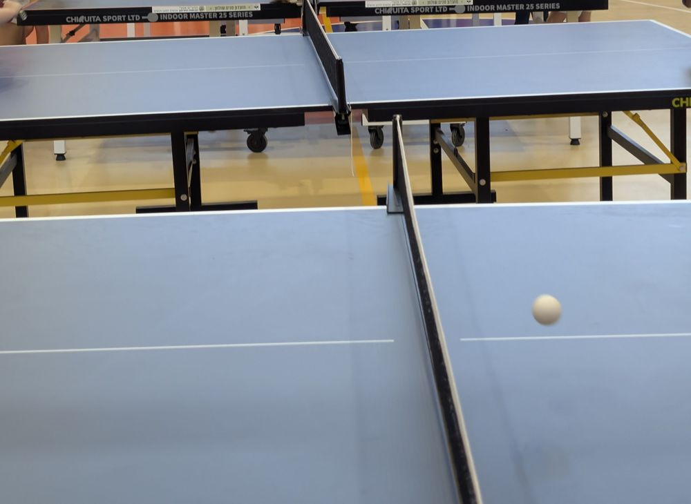
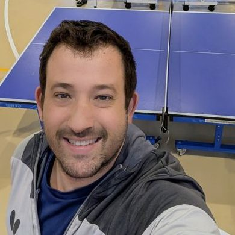

מועדון טניס שולחן מבואות החרמון ע״ש רוני גלבוע
המועדון שמאמן את הקבוצה, ומפעיל קבוצות לכל הגילאים בשאר ישוב, ברמת כורזים ובקיבוץ דפנה.
פינג פונג, פיזיותרפיה והרצאות, כל שבוע במתנ״ס מבואות החרמון בצומת כ״ח.

המפגש הקבוע של הסניף, 8:00 עד 12:00. אפשר להגיע לבד או עם בן או בת זוג.
מתחממים ומשחקים עם המאמן שחר גלעד. כל אחד ואחת בקצב שלהם, ואין צורך בניסיון או בציוד.
כל שבוע נושא אחר, עם אנשי מקצוע ועם זמן לשאלות.

הסניף פועל יחד עם גופים מהאזור, וכל אחד מהם נותן חלק אחר מהבוקר.
רוני גלבוע מבית הלל, טייס לשעבר בחיל האוויר, יזם את פרויקט הפינג פונג של עמותת פרקינסון בישראל. בתוך שנה הוקמו קבוצות בסניפים ברחבי הארץ ונבחרת ישראל יצאה לאליפות העולם הראשונה שלה. המועדון שלנו נקרא על שמו, והקבוצה כאן ממשיכה את הדרך שהתחיל.
המועדון שמאמן את הקבוצה, ומפעיל קבוצות לכל הגילאים בשאר ישוב, ברמת כורזים ובקיבוץ דפנה.
הבית של המפגש השבועי ביום חמישי, בצומת כ״ח.
שותפה לפעילות, והדגל שלה הגיע איתנו עד לאליפות העולם בהנובר.
המשחק דורש תגובה מהירה, תיאום בין העין ליד, שיווי משקל ותכנון של המהלך הבא. זה בדיוק מה שהמחלה מקשה עליו, ולכן חוקרים בודקים אותו בשנים האחרונות.
12 משתתפים בגיל ממוצע 73 שיחקו פעם בשבוע. כבר אחרי שלושה חודשים, וגם אחרי שישה, נמדד שיפור מובהק בתסמינים המוטוריים ובפעולות היומיום. לא נמצא שינוי במצב הרוח ובזיכרון.
30 משתתפים. ציון התסמינים המוטוריים ירד בממוצע ב־5.7 נקודות, עם שיפור בשיווי המשקל ובסבולת ההליכה.
לכתבה על המחקרומה לגבי התקדמות המחלה? עדיין אין מחקר שהוכיח שפינג פונג מאט אותה. מה שהמחקרים כן מראים הוא שיפור בתנועה ובתפקוד, בעזרת פעילות בטוחה ומהנה שעושים יחד עם אחרים. אלה מחקרים קטנים יחסית, והם לא באים במקום טיפול רפואי. סקירה מסכמת ב־Cureus
שתי שחקניות מהקבוצה שלנו ייצגו את ישראל באליפות העולם בטניס שולחן לפרקינסון, בהנובר, ספטמבר 2026.

המאמן הראשי של מועדון טניס שולחן מבואות החרמון. ליווה את שחקניות הקבוצה לאליפות העולם בהנובר.
הכתובת לכל שאלה. היא תספר על הפעילויות ותתאם איתכם את המפגש הראשון.
כן. רוב מי שמגיע מתחיל מאפס. המאמן מתאים את התרגילים לכל משתתף, ואין צורך להביא ציוד.
בהחלט. בני משפחה מוזמנים למפגשים, ויש בסניף גם סדנת תמיכה שמיועדת להם.
שולחים הודעה לדורית היימן בוואטסאפ. היא תחזור אליכם ותתאם את המפגש הראשון.